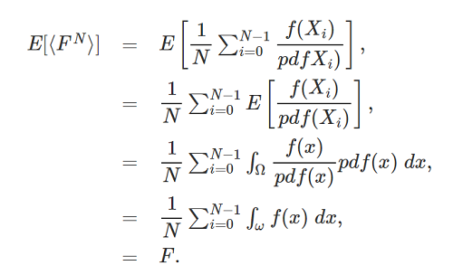

蒙特·卡罗积分公式
对于一个连续函数f，它的积分公式为：
\[ F = \int _{a}^{b}f(x)dx \]
对应的，f的蒙特·卡罗积分公式如下：
\[ F^{N} = \frac {1}{N}\sum _{i=1}^{N}\frac {f(X_{i})}{ pdf(X_{i}) } \]
蒙特卡罗最关键的就是理解这条公式了。其他延伸探讨都可以暂时忽略。那么这条公式如何理解呢？首先第一点是，虽然这条公式没有积分符号\(\int \)，但是它认被称为积分，这是因为这公式的作用相当于在对f(x)做积分，只不过不那么“精确”，即蒙特·卡罗积分是对理想积分的近似。
那么这个近似是如何完成的？很简单，核心就是两个字：采样(Sampling)。对一个连续函数的采样方法是在该函数的定义域中随机挑N个值，并求出对应的N个\( f(X_{i}) \)，就得到了样本集合。再对这些样本集合做一些换算，就可以得到一个近似的积分了。对于蒙特·卡罗积分，采样样本越多，就越逼近真实的积分结果，这是蒙特·卡罗积分的最核心特性。
继续观察上面的公式，里面还有一个极其重要的参数：pdf(probability distribution function，概率分布函数)。pdf还有个近亲pmf，下面小节详解pdf、pmf的由来。
pdf和pmf
- pmf(probability mass function)，指的是离散的随机变量的概率分布函数
- pdf(probability distribution function)， 指的是连续的随机变量的概率分布函数
离散的随机变量X的数学期望为：
\[E[X] = \sum _{ x_{i} }pmf(x_{i})x_{i} \]
连续的随机变量X的数学期望为：
\[E[X] = \int ^{\infty }_{-\infty }pdf(x)xdx \]
pdf和pmf名字接近，含义也是接近。pdf、pmf函数的参数都是样本值x，返回值是概率，即表示一个样本出现的概率，所有样本的出现概率之和(概率的积分)应等于1。要注意的是，pdf、pmf的存在说明有可能每个样本的出现概率都是各不相同的。
pmf
pmf的简单例子就是基于均匀分布的离散的随机变量X，此时\( pmf(X_{i}) \)恒等于\( \frac{1}{N} \)，含义是每个随机样本的出现概率等于\( \frac{1}{样本总数} \)。
通过这个例子也印证了pmf的性质：pmf函数的所有结果值之和等于1。
借用http://www.scratchapixel.com/的一个很好的例子来说明：

这个例子中，目标问题是求出该函数[a,b]段曲线下方的面积(最后一幅图的黑色区域)，也就是要求该函数[a,b]段的积分。基于蒙特·卡罗积分的解法，就要用上面给出的公式：
\[ F^{N} = \frac {1}{N}\sum _{i=1}^{N}\frac {f(X_{i})}{ pdf(X_{i}) } \]
在此图中，做了四次随机采样，得到了四个随机样本\( x_{i} \)：\( x_{1}、x_{2}、x_{3}、x_{4} \)，并且进而得到了这四个样本的\( f(x_{i}) \)值：\( f(x_{1})、f(x_{2})、f(x_{3})、f(x_{4}) \)。（原文没有提及如何得到\( f(x_{i}) \)。函数f是奇形怪状的，不太可能有表达式存在，难道是用尺子量的？暂且忽略这个事吧。）
有了这4个样本后，可以针对每一个样本求一个近似面积值，这个面积值等于\( f(x_{i}) (b - a) \)。为什么可以这样做呢？是因为每一个单独的样本是对原函数f的近似，即在每个样本中，认为\( f(x) \)恒等于\( f(x_{i}) \)，从而让原函数曲线简化成一个矩形区域，而矩形的面积显然就是长(b-a)乘以宽\( f(x_{i}) \)。
得到4个近似面积值后，再求出它们的均值(数学期望)，就完成了蒙特·卡罗积分。把上述流程汇总得到：
\[ Area = \frac {1}{4}(f(x_{1})(b - a) + f(x_{2})(b - a) + f(x_{3})(b - a) + f(x_{4})(b - a)) \]
\[ = \frac {1}{4}(b - a)( f(x_{1}) + f(x_{2}) + f(x_{3}) + f(x_{4}) ) \]
\[ = \frac {1}{4}(b - a)\sum _{i=1}^{4}f(x_{i}) \]
此时，对比下蒙特·卡罗积分公式：
\[ F^{N} = \frac {1}{N}\sum _{i=1}^{N}\frac {f(X_{i})}{ pdf(X_{i}) } \]
发现两个式子非常相似，对式子做下转换得到：
\[ Area = \frac {1}{4}\sum _{i=1}^{4}\frac {f(x_{i})}{\frac {1}{b - a} } \]
于是可以知道\( pdf(x_{i}) \)等于：
\[ pdf(x_{i}) = \frac {1}{b - a } \]
这意味着，对于连续函数f，f的每个可能取值x的出现概率等于x的取值范围[a,b]的倒数\(\frac{1}{b-a}\)。
在实际应用场合，随机变量X要写成F(X)，即可能需要对X做一个转换再使用。这时候要注意F(X)的pdf不等于X的pdf。
蒙特·卡罗积分的数学期望等于理想积分？
对于下面的\(F\)和\(F^{N}\)：
\[ F = \int _{a}^{b}f(x)dx \]
\[ F^{N} = \frac {1}{N}\sum _{i=1}^{N}\frac {f(X_{i})}{ pdf(X_{i}) } \]
是否随着N变大，\(F^{N}\)会逼近\(F\)？即\(F^{N}\)的数学期望是否等于\(F\)?Monte Carlo Methods in Practice文章中给出了推导过程：

第二行到第三行是最不好理解的。因为这里其实用到了新的知识点：Law of the unconscious statistician(简称：LOTUS)。LOTUS的应用情景是，已知随机变量X的概率分布，但不知道f(x)的分布，此时用LOTUS公式能计算出函数f(x)的数学期望。LOTUS的公式如下：
f(x)是离散函数时:
\[ E[f(X)] = \sum _{x_{i}}f(x_{i})pmf(x_{i}) \]
f(x)是连续函数时:
\[ E[f(X)] = \int _{-\infty }^{\infty}f(x)pdf(x)dx \]
(建议对比第二小节开头的两条公式来理解)
有了LOTUS公式，再来看第二行到第三行的转换，就好理解了：
\[ E[ \frac {f(X_{i})}{pdf(X_{i})} ] = E[ \frac {f(x)}{pdf(x)} ] =\int _{-\infty }^{\infty}\frac {f(x)}{pdf(x)}pdf(x)dx \]
\[ =\int _{-\infty }^{\infty}f(x)dx \]
参考资料
博主将十分感谢对本文章的任意金额的打赏^_^